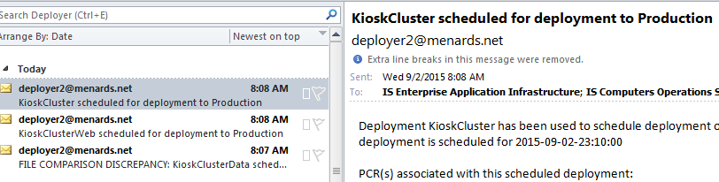

Rolling Deployment
There are two types of deployment for our web apps. Rolling and nightly deployments.When Siding or Roofing only has data changes and no media changes, then we can do rolling deployment, which means we can roll the app nation wide during the day
Rolling deployment test
- Rolling deployment is done during the day at your PC while you are still at work
- When time comes, you shut down one server, make the deployment, and turn it back on
- Test your MCR to ensure the app works
- rinse repeat to next web app
Night Deployment Test (Can test from home if you have the token as we are testing prod links)
At this point our apps have gone through dev testing, stage testing, and is now ready to be put into the stores.
Basically when our web apps have media changes, the apps can only be rolled out to the store at night,
because that's when no one is using it. The team lead sends the pacakge to a server and the server will deploy the app automatically for us
during the 11pm mark. Due to that case, developers (that's us) only need to test the night deployment not have to worry about deploying it.
Someone will have to come in at 11 (can be at home if have token) and wait for the email deployment notification before they can test the web apps.
We need to test the app right then because we need to ensure the apps are working for the morning.
If the production (Prod) links don't work, we have to resolve it by calling the oncall people and talk to them (networking). They will do their server magic and have you test again. In worse case if nothing can be done, we will have to wait till morning
How to test nightly deployment
- Basically just run the web apps and make a printout and ensure you don't get 500 error screens.
- Wait till you get deployment email, look for the roofing.war or siding.war email, thats' when you can test that app
- The deployment flow is - The data gets deployed, followed by the media, followed by the war files. that's why we wait for war files
- Usually if you don't get an email about the war files, wait until 11:15 to be safe to start testing
- Go to the kiosk links > go to the app you need to test (Roofing or Siding or Both) > (but one at a time) click on Prod LB and not the individual serves
- Run the App MCR test cases using Redmine, under (ex: under Q1R1) and see that it doesn't crash or act weird, so you would test all roofing/siding MCR for that release
- If you were only told to test Roofing, just worry about testing that app
- You don't have to test every case, just test quickly as if you were to test at store, make sure to print
- If all testing pass, don't do anything to the MCR, just email Team Lead and tell them nightly deployment testing passed
Trouble shooting
If you click on the kiosk url and you just get the spinning circle in the tab, then it means the kiosk url server is down (not the mcom production server), and you'll have to restart the kiosk url server.
To restart server: you'll need mtPutty (a wrapper around putty).
Kiosk Url not working? Need to restart server for kiosk url? but no mtPutty, use the shorcut links below instead -- but these are only for siding and roofing
Other ways to access kiosk url page which is also on the server instance of another TM's PC
Brian's Kiosk Url to ping if this pc is up cmd ping 10.3.44.157
Patch Testing - Stage
Stage patching happens before prod patching. Stage is loaded sunday but we don't have to come in to test on sunday.
We can wait till later in the week during a week day. The process is still same as the prod testing, except we can test it whenever during our work period.
We do have to wait for the TL to assign us the redmine patch testing ticket.
Usually we run the stage kiosk URL, rung roofing and siding using the stage LB link, and make sure they don't crash and can run normal all the way to print.
For landscape vizualizer, use the "webInt" link not jboss, and we usually just do a recall and see if the recall works and can print. Assign back the ticket to team lead
Patch testing - Prod
Two types of testing: MySQL or JBoss
- Usually the on-call person comes to test this around 9 PM, not 11 PM like nightly deploy testing.
- Basically just check the correct App Server for the web apps like roofing, siding, and landscape visualizer and run through wihthout crashing, no MCRs to test against for patch testing
- You were suppose to be given notice on what App Server to test, i.e. A1 or A2, if not, Use the LB link under prod for each app (Siding, Roofing, landscape Visualizer = use jBoss link)
- If you get 503 error while running siding/roofing after a page or two, wait a bit and try again, or contact networking on-call at 828-4669
- Eventually a 503 error resovles itself in last case after 15 min, if not, contact the patch testers who emailed you to test and tell them you are having issues
- If you are asked to provide server IP you are testing, run the LB link for that app, (you'll be taken to the app page, bring up command prompt and ping the url app design-it.mymenards.com without the http or www, give them the pinged ip something like 10.4.250.27
- Usually testing through siding,roofing,visualizer just takes 15 minutes but come 30 minutes ahead of time.
- You begin testing when you get the On-call or email. If at work around 9 am, check your email. If at home, you'll be getting a phone call
- If you don't hav VPN, you should be at work
- You have to respond by email if you get the email and let the sender know you are testing the patch
- When you are done testing, email back to the sender and CC team lead and manager that patch testing passed also pass back Patch MCR to TL and comment in there too, you are then free to leave
- If problems arise, let the patcher know you are having issues and try to fix it before you leave for the night
Special Testing
Sometimes there is a special testing case. This will have instructions to follow
You will have to test the JBoss A1 or A2 (app1 app2) depending on what server you are to test against, which the patcher releaser will email you the info
EAI Deployment - Prod
How to know if Roofing or Siding is setup for nightly deployment in advance
- When we need to do nightly deployment, TL sets up a EAI deployment.
- We should then see this in the email 
The name for our designit it will be koskCluster.
- visit LINK HERE to login
- refer to acc for loging credentials
- Scheduled Deployment > view scheduled prod deployements > check tab "Pending" or "Approved" > you should see status of a link in approved mode
- If you don't see anything, then roofing or siding isn't setup and will not be deployed at 11pm